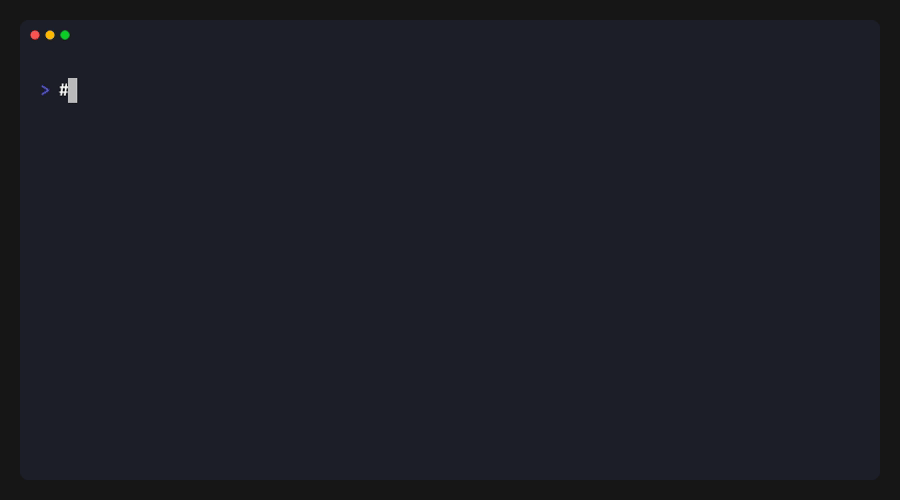

escapepod bam-filter¶
Filter reads from a POD5 file based on a paired BAM file. Supports filtering by mapped status, genomic region, and mapping quality.

Usage¶
escapepod bam-filter -b <BAM> -o <OUTPUT> [OPTIONS] <INPUT>
Arguments¶
| Argument | Description |
|---|---|
<INPUT> |
Input POD5 file or directory |
Options¶
| Option | Description |
|---|---|
-b, --bam <FILE> |
Input BAM file (required) |
-o, --output <FILE> |
Output POD5 file (required) |
--mapped |
Keep only mapped reads |
--region <REGION> |
Filter by genomic region (chr or chr:start-end) |
-q, --quality <MAPQ> |
Minimum mapping quality |
-h, --help |
Print help |
Examples¶
Extract Mapped Reads¶
Keep only reads that mapped to the reference:
escapepod bam-filter -b aligned.bam -o mapped.pod5 --mapped experiment.pod5
Filter by Region¶
Extract reads mapping to a specific chromosome or region:
# All reads on chromosome 1
escapepod bam-filter -b aligned.bam -o chr1.pod5 --region chr1 experiment.pod5
# Reads in a specific region
escapepod bam-filter -b aligned.bam -o region.pod5 --region chr1:1000000-2000000 experiment.pod5
Filter by Mapping Quality¶
Keep only high-quality alignments:
escapepod bam-filter -b aligned.bam -o high_quality.pod5 -q 30 experiment.pod5
Combined Filters¶
Combine multiple filter criteria:
escapepod bam-filter -b aligned.bam -o filtered.pod5 \
--mapped --region chr1 -q 20 experiment.pod5
Process a Directory¶
Filter all POD5 files in a directory:
escapepod bam-filter -b aligned.bam -o filtered.pod5 pod5_directory/
BAM Index¶
Region queries require a BAM index (.bai file). If the index doesn't exist, escapepod will automatically create one:
Info: BAI index not found, creating aligned.bam.bai...
Done: Created BAI index: aligned.bam.bai
Output¶
The command prints filtering statistics:
Filtering experiment.pod5 using BAM aligned.bam
Output: filtered.pod5
Filter: mapped reads only
Filter: region chr1
Filter: MAPQ >= 20
Scanning BAM file...
50000 read IDs from 75000 BAM records
Scanning POD5 files for dictionary values...
45000 reads found
Filtering [████████████████████████████████████████] 45000/45000
Filtered 45000 reads from 100000 total (45.0%)
Note: 5000 BAM read IDs were not found in POD5 file(s)
Notes¶
- Read IDs are matched by UUID from BAM query names
- Signal data is kept compressed during copying for efficiency
- Run info is preserved and deduplicated when processing multiple files
- Reads not found in the BAM file are excluded from output